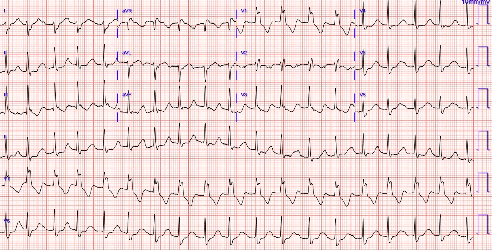
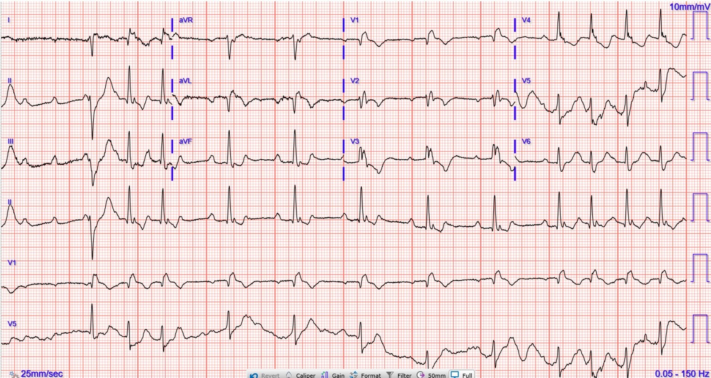
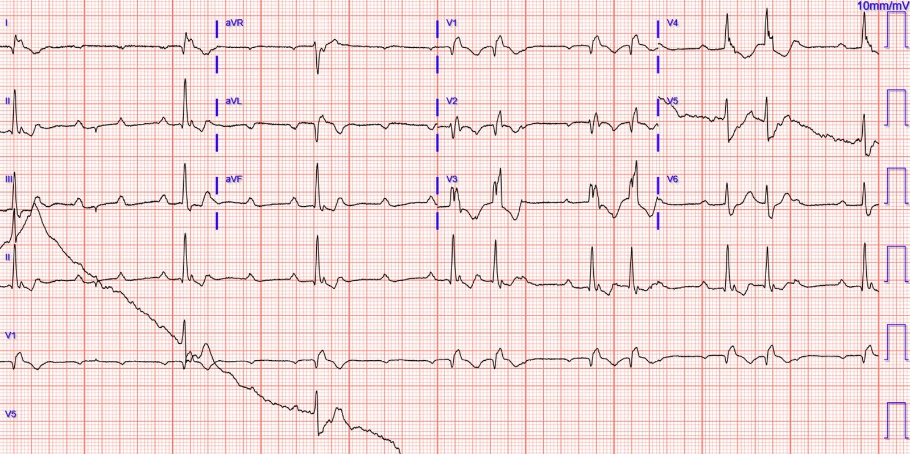
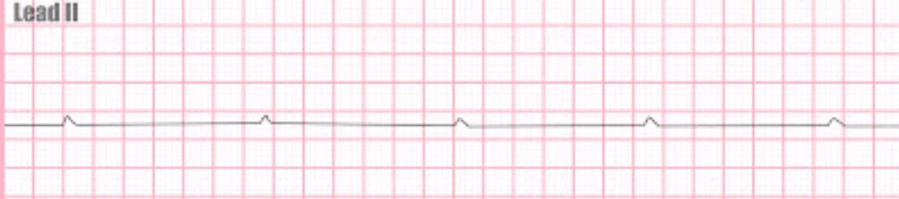
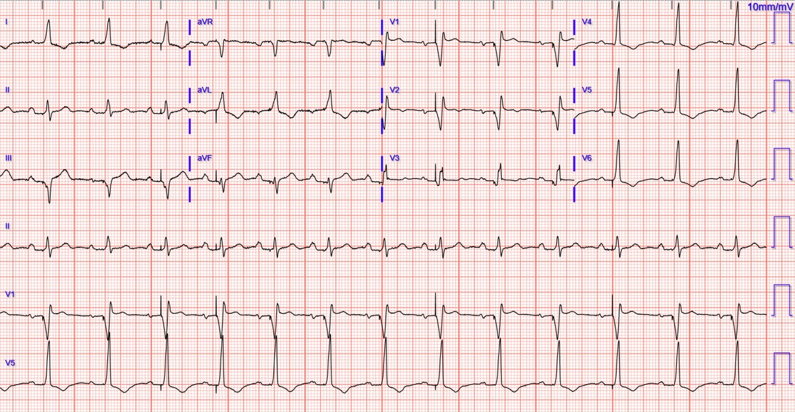
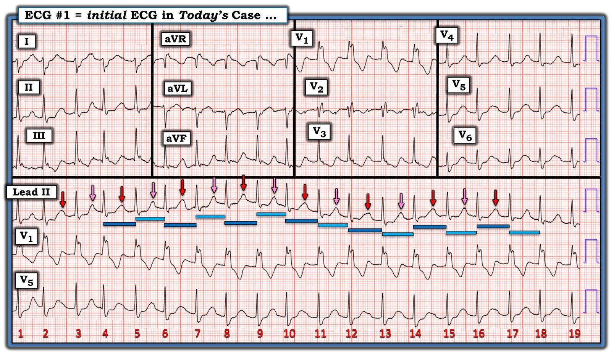
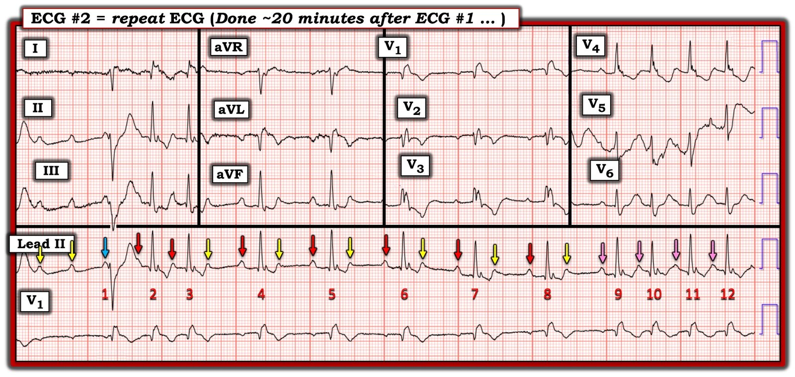
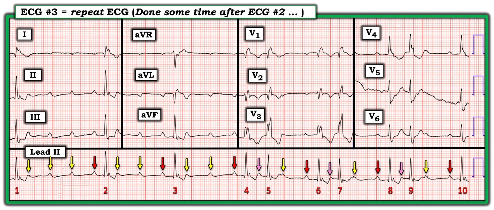

27/06/2024 — Một phụ nữ ở độ tuổi 50 với nhiều cơn ngất
Bản dịch tiếng Việt của bài "A woman in her 50s with multiple episodes of syncope" – Dr. Smith’s ECG Blog. Giữ nguyên toàn bộ 9 hình ảnh của bản gốc.
Tác giả: Sofiya Diurba MD, bình duyệt: Meyers, Grauer
Một phụ nữ ở độ tuổi 50 có tiền sử đã biết blốc nhánh phải (RBBB) và từng có các cơn ngất, đến khoa cấp cứu (ED) vì năm cơn ngất trong 24 giờ qua. Mỗi cơn đều có tiền triệu là đau ngực sau xương ức nhẹ, khó thở và cảm giác “đầu óc mơ hồ” (brain fog). Đội cấp cứu ngoài viện (EMS) báo cáo trong lúc vận chuyển có lúc nhịp nhanh xoang, có lúc nhịp chậm thứ phát do một dạng blốc tim nào đó. Họ ghi nhận bệnh nhân luôn có triệu chứng nhiều hơn khi nhịp chậm, nhưng không có hạ huyết áp.
Bình luận của Smith: Truy cập đây để xem một bài blog toàn diện về ngất và link tới phiên bản chi tiết nhất của Quy tắc Ngất Canada (Canadian Syncope Rule): Emergency Department Syncope Workup (Đánh giá ngất tại khoa cấp cứu).
Bệnh nhân vẫn có huyết áp bình thường nhưng triệu chứng dao động, với cảm giác “như sắp ngất đến nơi”. Các dấu hiệu sinh tồn trong giới hạn bình thường lúc phân loại.
Đây là điện tâm đồ đầu tiên của bệnh nhân tại khoa cấp cứu:


Bạn thấy gì?
Điện tâm đồ này cho thấy cả blốc nhánh phải lẫn blốc phân nhánh trái sau. Khó nhận ra sóng P, nhưng có thể thấy rõ nhất ở V2, và qua các khía trên sóng T ở các chuyển đạo khác – đây là nhịp nhanh xoang với khoảng PR rất dài, cho thấy blốc độ một.
Bình luận của Smith: Blốc hai phân nhánh kèm blốc AV độ một được gọi là “blốc ba phân nhánh” (Trifascicular Block). Dù tên gọi này có phần không chính xác, nó báo trước blốc AV mức độ cao. Xem các bài blog này.
Nhưng hãy xem phân tích sâu sắc và hấp dẫn của Ken Grauer ở cuối bài nếu bạn muốn biết vì sao thực ra nó phức tạp hơn chỉ là nhịp xoang đơn thuần!
Một điện tâm đồ khác được ghi khoảng hai mươi phút sau và cho thấy như sau:


Nhịp phức tạp và thay đổi, nhưng nhìn chung cho thấy blốc AV ở nhiều mức độ khác nhau. Các phức bộ QRS có hình dạng RBBB tương tự điện tâm đồ trước. Đến cuối điện tâm đồ, có dẫn truyền 1:1.
Xem sơ đồ chi tiết của Ken Grauer giải thích từng nhát bóp, ở cuối bài. Ông cho thấy điện tâm đồ này biểu hiện đường dẫn truyền kép trong nút AV như thế nào.
Các bác sĩ điều trị đã lo ngại một cách thích đáng về blốc AV mức độ cao có triệu chứng. Họ biết bệnh nhân sẽ cần máy tạo nhịp trừ khi phát hiện được một nguyên nhân thoáng qua và có thể đảo ngược.
Các xét nghiệm gồm điện giải, công thức máu (CBC), troponin, BNP, TSH và chức năng gan (LFT) phần lớn không có gì đáng chú ý, không giải thích được các dấu hiệu trên điện tâm đồ.
Bác sĩ tim mạch được mời hội chẩn và bệnh nhân được ghi thêm vài điện tâm đồ trong lúc ở khoa cấp cứu, cho thấy blốc AV độ 2 ở mức độ còn cao hơn, nặng hơn.


Trong lúc chờ nhập khoa tim mạch, bệnh nhân có nhịp sau đây trên monitor trong khoảng mười giây (hình minh họa đại diện, do “ECG Educator Blog” cung cấp):


Bệnh nhân bị ngưng thất, không có sóng P nào được dẫn truyền và không có nhịp thoát bộ nối hay nhịp thoát thất nào xuất hiện. Bệnh nhân mất ý thức thoáng qua trong cơn này nhưng sau đó trở lại nhịp luân phiên giữa blốc độ hai/độ ba và không cần ép ngực. Miếng dán tạo nhịp được đặt ngay để tạo nhịp qua da. Dĩ nhiên, một khi điều này xảy ra, bệnh nhân sẽ cần máy tạo nhịp tạm thời hoặc vĩnh viễn càng sớm càng tốt.
Trong khi đang tạo nhịp qua da, khoa tim mạch đưa bệnh nhân cấp cứu vào phòng thông tim (cath lab) để đặt dây tạo nhịp tạm thời qua tĩnh mạch cảnh trong phải (IJ), bệnh nhân dung nạp tốt.
Bệnh nhân cần tạo nhịp ngắt quãng từ dây tạm thời nhiều lần trong đêm nên máy tạo nhịp vĩnh viễn được đặt vào ngày hôm sau. Siêu âm tim cho thấy phân suất tống máu (EF) bình thường, không có bất thường nào. Các lần đo troponin đều âm tính. Không tìm thấy nguyên nhân có thể đảo ngược rõ ràng nào cho tình trạng blốc tim nặng dần. Bệnh nhân được xuất viện với kế hoạch chụp MRI tim ngoại trú để đánh giá thêm.
Đây là điện tâm đồ của bệnh nhân trước khi xuất viện:


Điện tâm đồ cho thấy nhịp tạo nhịp thất. Blốc tim của bệnh nhân đã được điều trị thành công!
Những điểm cần học:
Khi bệnh nhân có blốc hai phân nhánh, họ chỉ còn một phân nhánh nhỏ bé duy nhất bám trụ để dẫn truyền tín hiệu từ nhĩ xuống thất. Khi một bệnh nhân có blốc hai phân nhánh đến viện với blốc tim độ hai hoặc độ ba từng lúc, họ cần can thiệp khẩn, hoặc như trong ca này là cấp cứu, để ngăn blốc tim hoàn toàn kéo dài hoặc vô tâm thu như bệnh nhân này đã gặp.
Đừng quên mẹo ghi nhớ WOBBLER về những gì cần tìm trên điện tâm đồ để phát hiện các nguyên nhân tim mạch nguy hiểm gây ngất ở bệnh nhân đến viện vì ngất (nguồn: Dr. Smith’s ECG Blog):
WPW (hội chứng Wolff-Parkinson-White)
Obstructed AV pathway (tắc nghẽn đường dẫn truyền AV, tức là các blốc AV)
Brugada (hội chứng Brugada)
Bifascicular block (blốc hai phân nhánh)
LVH (phì đại thất trái, gồm cả HOCM và các bệnh lý khác có LVH như hẹp van động mạch chủ)
Epsilon wave (sóng Epsilon – ARVC)
Repolarization (rối loạn tái cực – cả QT ngắn lẫn QT dài)

===================================
BÌNH LUẬN CỦA TÔI, bởi KEN GRAUER, MD (27/6/2024):
===================================
Là người yêu thích thử thách đọc các rối loạn nhịp phức tạp — tôi không cưỡng lại được mong muốn “lặn sâu” vào các blốc dẫn truyền hấp dẫn trong bản ghi hôm nay. Dù hoàn toàn thừa nhận rằng tôi không chắc chắn về cơ chế mình đề xuất cho tất cả những gì chúng ta thấy — tôi hy vọng những khái niệm tôi gợi ý sẽ mang lại nhiều điều sáng tỏ.
- XIN NHẤN MẠNH: Những gì sau đây là các khái niệm nâng cao, vượt xa những gì cần thiết để xử trí cấp cứu thích hợp cho bệnh nhân hôm nay. Chỉ cần dừng lại ở nhận định nhịp chậm rõ rệt kèm blốc AV mức độ cao, cần tạo nhịp ở bệnh nhân này với nhiều cơn ngất — là quá đủ cho “câu trả lời nhanh”. Nhưng với những ai muốn đi xa hơn — tôi xin bổ sung các nhận xét sau.
===========================================
Các khái niệm chung:
- Tôi không thấy bằng chứng của blốc AV hoàn toàn ( = độ 3) từng lúc. Cách dễ nhất để nhanh chóng nhận ra blốc AV hoàn toàn — là nhớ rằng phần lớn thời gian, nhịp thoát sẽ đều (hoặc ít nhất là khá đều) khi có blốc AV hoàn toàn — và điều này không đúng với loạt nhịp hôm nay.
- Thêm một bằng chứng chống lại blốc AV hoàn toàn — là sự hiện diện của một “quy luật” rõ ràng trong các nhịp này, với 2 khoảng PR liên tục lặp lại. Nhận ra các khoảng PR lặp lại nghĩa là có ít nhất một phần dẫn truyền (do đó loại trừ blốc AV hoàn toàn).
Điện tâm đồ ban đầu (mà tôi đã đánh dấu trong Hình 1):
Để rõ ràng, trong Hình 1 — tôi đã đánh dấu điện tâm đồ ban đầu của ca hôm nay. Như BS. Diurba và Meyers đã nêu — điện tâm đồ ban đầu này cho thấy một nhịp trên thất nhanh với RBBB/LPHB (tức là QRS dương hoàn toàn ở V1 với sóng S tận rộng ở các chuyển đạo bên I và V6 — với phần thẳng của sóng S ở chuyển đạo I âm là chủ yếu, cho thấy có kèm LPHB).
- Nhịp này không phải nhịp nhanh xoang đơn thuần. Dù sóng P khá đều (tức là các mũi tên tôi thêm ở chuyển đạo II, tương ứng với các khía mà BS. Diurba và Meyers đã chỉ ra ở chuyển đạo V2) — nhịp thất lại không đều.
- Thay vì nhịp thất đều — có một kiểu nhịp đôi (bigeminal) với khoảng R-R hơi dài hơn (các thanh XANH đậm) luân phiên với khoảng R-R ngắn hơn (các thanh XANH nhạt). Điều này rất tinh tế! — nhưng đo bằng compa xác nhận quy luật nhất quán này.
- Quan sát kỹ (thấy rõ nhất ở dải nhịp dài chuyển đạo II của Hình 1) — cũng xác nhận một thay đổi nhất quán về hình dạng sóng T xảy ra cách một nhát. Đây là thật — và không phải do ngẫu nhiên. Đo bằng compa xác nhận khoảng PR luân phiên từ khoảng PR hơi dài hơn (sóng P mũi tên ĐỎ) — sang khoảng PR ngắn hơn (sóng P mũi tên HỒNG).
Những quan sát này khiến tôi bối rối …
- Giải thích hợp lý duy nhất tôi có thể nghĩ ra cho việc tần số nhĩ (khoảng P-P) không đổi — nhưng khoảng PR lại luân phiên từ dài sang ngắn mà không hề rớt nhát nào — là nếu bệnh nhân có đường dẫn truyền kép trong nút AV, và chuyển từ đường này sang đường kia cách một nhát.


Hình 2: Ủng hộ giả thuyết của tôi …
Như BS. Diurba và Meyers đã nêu — có RẤT NHIỀU điều diễn ra trong Hình 2.
- Nhịp nhĩ (khoảng P-P) vẫn không đổi, tần số vẫn trên 100/phút (các mũi tên màu trong Hình 2).
- Nhát #2 là một nhát hỗn hợp (sóng P mũi tên XANH đúng lúc không có đủ thời gian để dẫn truyền xuống thất — nên nó hỗn hợp với một nhát thoát thất xuất hiện do khoảng R-R đứng trước quá dài).
- Tôi nghi ngờ có đảo điện cực LA-RA (Xem Bình luận của tôi trong bài ngày 17 tháng Tám năm 2022 trên Dr. Smith’s ECG Blog để ôn lại các ảnh hưởng của đảo điện cực LA-RA). Dù khó chứng minh đảo điện cực sau khi sự việc đã xảy ra, nhất là khi có nhịp chậm và nhát hỗn hợp — nhưng các nhát trên thất #2 và 3 đột nhiên trông giống như chuyển đạo aVR trước đó — và chuyển đạo aVR đột nhiên trông giống chuyển đạo I trong Hình 1 khi chúng ta thấy LPHB.
“Tin tốt” (xét từ góc độ đọc rối loạn nhịp) — là giờ đây chúng ta thấy sóng P rõ hơn nhiều so với điện tâm đồ ban đầu.
- Điện tâm đồ #2 bắt đầu bằng hình ảnh có vẻ là blốc AV độ 2 mức độ cao (tức là chúng ta thấy 2 sóng P mũi tên VÀNG liên tiếp không được dẫn truyền trước nhát #1).
- Tiếp theo là 2 sóng P được dẫn truyền liên tiếp với cùng khoảng PR hơi dài hơn mà chúng ta đã thấy ở Hình 1 (sóng P mũi tên ĐỎ trước nhát #2 và 3).
- Sau đó là một số chu kỳ blốc AV độ 2 với dẫn truyền AV 2:1 (sóng P mũi tên ĐỎ trước các nhát #4,5,6,7,8, đều có cùng khoảng PR dài hơn mà chúng ta đã thấy ở Hình 1 — và các sóng P mũi tên VÀNG là các nhát bị rớt.).
- Hình 2 kết thúc với 4 nhát dẫn truyền 1:1 — nhưng lần này, chúng ta thấy khoảng PR hơi ngắn hơn (các mũi tên HỒNG đứng trước nhát #9,10,11,12).
- LƯU Ý: Việc khoảng PR của tất cả các sóng P mũi tên ĐỎ trong Hình 2 vẫn giữ nguyên xác nhận chắc chắn có dẫn truyền (tức là không có bằng chứng blốc AV hoàn toàn). Điều tương tự cũng đúng với các khoảng PR giống nhau, hơi ngắn hơn, của mỗi sóng P trong 4 sóng P mũi tên HỒNG ở cuối bản ghi — và giả thuyết của tôi giải thích vì sao khoảng PR của các nhát được dẫn truyền luân phiên là có các đường dẫn truyền kép trong nút AV, mỗi đường đều biểu hiện blốc AV!


Hình 3: Blốc AV nặng hơn …
Tôi tiếp tục tô màu mã hóa các sóng P trên điện tâm đồ #3.
- LƯU Ý: Tôi nghi ngờ một lần nữa lại có đảo điện cực LA-RA ở Hình 3.
- Chúng ta thấy thêm bằng chứng của blốc AV độ 2 mức độ cao hơn ở Hình 3 — khi chúng ta thấy 2 và 3 sóng P liên tiếp không được dẫn truyền (các mũi tên VÀNG biểu thị những sóng P đúng lúc bị blốc). Dù vậy — chúng ta biết rằng điện tâm đồ #3 không phải là blốc AV hoàn toàn, vì khoảng PR của tất cả các sóng P có mũi tên ĐỎ vẫn hằng định (và vẫn bằng khoảng PR của các sóng P có mũi tên ĐỎ ở Hình 1 và Hình 2 đã bàn ở trên).
- Một lần nữa — các sóng P có mũi tên HỒNG biểu thị những nhát được dẫn truyền với cùng khoảng PR hơi ngắn hơn như đã thấy ở Hình 1 và Hình 2.
- LƯU Ý: Ngay cả khi đã tính đến việc một phần của các sóng P có mũi tên HỒNG này bị sóng T đi trước “che mất” — đo bằng compa vẫn xác nhận rằng khoảng PR của các sóng P có mũi tên HỒNG này thật sự ngắn hơn khoảng PR của các sóng P có mũi tên ĐỎ. Đây không phải là các PAC — vì các sóng P có mũi tên HỒNG này xuất hiện chính xác đúng lúc! Và cách duy nhất tôi biết để giải thích vì sao khoảng PR của các sóng P đúng lúc lại ngắn đi mà không hề có nhát nào bị rớt — là nếu có đường dẫn truyền kép trong nút AV, mỗi đường có mức độ blốc AV độ 2 mức độ cao riêng của nó.


===========================================
ĐIỀU CỐT LÕI trong CA BỆNH hôm nay = Bệnh nhân cần đặt máy tạo nhịp!
- Dù vậy, với những độc giả quan tâm đến các rối loạn nhịp phức tạp — Chẳng phải chuỗi bản ghi liên tiếp này thật hấp dẫn sao!
===========================================